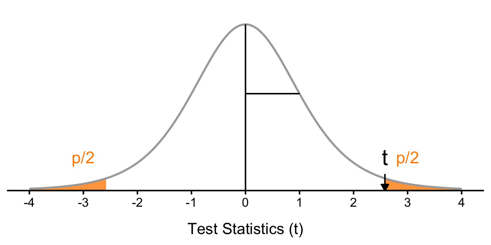

post = c(2, 8, 5, 9, 9, 4, 8)
pre = c(3, 3, 5, 8, 3, 1, 4)
diff = post - pre
n = length(diff)Ch.8: Paired Samples t-test
8 Paired Samples t-test
So far, we have dealt with data measured on a single variable at a single point in time, allowing us to gain an understanding of the logic and process behind statistics and hypothesis testing. Now, we will look at a slightly different type of data that has new information we couldn’t get at before: difference within individuals. Specifically, we will look at how the value of a variable, within people, changes across two time points, or differs across two conditions. This is a very powerful thing to do, and, as we will see shortly, it involves only a very slight addition to our existing process and does not change the mechanics of hypothesis testing or formulas at all!
8.1 Change and Differences
Researchers are often interested in change over time. Sometimes we want to see if change occurs naturally, and other times we are hoping for change in response to some manipulation. In each of these cases, we measure a single variable at different times, and what we are looking for is whether or not we get the same score at Time 2 as we did at Time 1. The absolute value of our measurements does not matter—all that matters is the change, or the difference score. Let’s look at an example.
| Before (Time 1) | After (Time 2) | Improvement |
|---|---|---|
| 3 | 2 | -1 |
| 3 | 8 | 5 |
| 5 | 5 | 0 |
| 8 | 9 | 1 |
| 3 | 9 | 6 |
| 1 | 4 | 3 |
| 4 | 8 | 4 |
Table 1 shows ratings on an attitude towards a bank before they watched a commercial and after they watched it. The difference between these scores (i.e., the score after minus the score before) represents improvement in the attitude. The third column is what we look at when assessing whether our commercial was effective. We want to see positive scores, which indicate that the viewers’ attitude went up. What we are not interested in is how good they were before the intervention or after the intervention. An important factor in this is that the participants received the same assessment at both time points. To calculate improvement or any other difference score, we must measure only a single variable.
When looking at change scores like the ones in Table 1, we calculate our difference scores by taking the Time 2 score and subtracting the Time 1 score. That is:
\[X_{D} = X_{T2} - X_{T1}\]
Where \(X_{D}\) is the difference score, \(X_{T1}\) is the score on the variable at Time 1, and \(X_{T2}\) is the score on the variable at Time 2. The difference score, \(X_D\), will be the data we use to test for improvement or change. We subtract Time 2 minus Time 1 for ease of interpretation; if scores get better, then the difference score will be positive. Similarly, if we’re measuring something like reaction time or depression symptoms that we are trying to reduce, then better outcomes (lower scores) will yield negative difference scores.
While we frequently use difference scores for data that are collected from the same participants twice, we can also test to see if people who are matched or paired in some way agree on a specific topic. These are called matched pairs data. For example, we can see if a parent and a child agree on the quality of home life, or we can see if two romantic partners agree on how serious and committed their relationship is. In these situations, we also subtract one score from the other to get a difference score. This time, however, it doesn’t matter which score we subtract from the other because what we are concerned with is the agreement.
In both of these types of data, what we have are multiple scores on a single variable. That is, a single observation or data point is comprised of two measurements that are put together into one difference score. This is what makes the analysis of change unique—our ability to link these measurements in a meaningful way. This type of analysis would not work if we had two separate samples of people that weren’t related at the individual level, such as samples of people from different states that we gathered independently.
8.1.1 A Rose by Any Other Name
It is important to point out that the paired samples t-test has been called many different things by many different people over the years: paired samples, related samples, matched pairs, repeated measures, dependent measures, dependent samples, and many others. What all of these names have in common is that they describe the analysis of two scores that are related in a systematic way within people or within pairs, which is what each of the datasets usable in this analysis have in common. As such, all of these names are equally appropriate, and the choice of which one to use comes down to preference. In this text, we will refer to paired samples, though the appearance of any of the other names throughout this chapter should not be taken to refer to a different analysis; they are all the same thing.
Now that we have an understanding of what difference scores are and know how to calculate them, we can use them to test hypotheses. As we will see, this works exactly the same way as testing hypotheses about one sample mean with a t statistic. The only difference is in the format of the null and alternative hypotheses.
8.2 Hypotheses of Change and Differences
When we work with difference scores, our research questions have to do with change. Did scores improve? Did symptoms get better? Did prevalence go up or down? Our hypotheses will reflect this. Remember that the null hypothesis is the idea that there is nothing interesting, notable, or impactful represented in our dataset. In a related samples t test, that takes the form of “no change.” There is no improvement in scores or decrease in symptoms. Thus, our null hypothesis is:
\[H_0: \text{There is no change or difference in the population.}\] \[H_0: \mu_D = 0\]
As with our other null hypotheses, we can express the null hypothesis for paired samples t-tests in both words and mathematical notation. The exact wording of the written-out version should be changed to match whatever research question we are addressing (e.g., “There is no change in ability scores after training”). However, the mathematical version of the null hypothesis is always exactly the same: the average change score is equal to zero. Our population parameter for the average is still \(\mu\), but it now has a subscript \(D\) to denote the fact that it is the average change score and not the average raw observation before or after our manipulation. Obviously, individual difference scores can go up or down, but the null hypothesis states that these positive or negative change values are just random chance and that the true average change score across all people is 0.
Our alternative hypotheses will also follow the same format that they did before: they can be directional if we suspect a change or difference in a specific direction, or we can use an inequality sign to test for any change:
Two-tailed test: \[H_1: \text{There is a change or difference in the population.}\] \[H_1: \mu_D \neq 0\]
One-tailed tests (improvement or increase): \[H_1: \text{The average score increases in the population.}\] \[H_1: \mu_D > 0\]
One-tailed tests (decline or decrease): \[H_1: \text{The average score decreases in the population.}\] \[H_1: \mu_D < 0\]
As before, your choice of which alternative hypothesis to use should be specified before you collect data based on your research question and any evidence you might have that would indicate a specific directional (or non-directional) change.
8.2.1 Test Statistic
Our test statistic for the change scores follows exactly the same format as the one-sample t-test. In fact, the only difference is in the data that we use. For our change test, we first calculate a difference score as shown above. Then, we use those scores as the raw data in the same mean calculation, standard error formula, and t statistic. Let’s look at each of these.
The mean difference score is calculated in the same way as any other mean: sum each of the individual difference scores and divide by the sample size.
\[M_D = \frac{\sum X_D}{n}\]
Here we are using the subscript \(D\) to keep track of that fact that these are difference scores instead of raw scores; it has no actual effect on our calculation. Using this, we calculate the standard deviation of the difference scores the same way as well:
\[s_D = \sqrt{\frac{\sum (X_D - M_D)^2}{n - 1}} = \sqrt{\frac{SS}{df}}\]
Once we have our standard deviation, we can find the standard error:
\[SEM = \frac{s_D}{\sqrt{n}}\]
Finally, our test statistic t has the same structure as well:
\[t = \frac{M_D - \mu_D}{SEM} = \frac{M_D - \mu_D}{s_D/\sqrt{n}}\]
As we can see, once we calculate our difference scores from our raw measurements, everything else is exactly the same.
8.2.1.1 Find p values from the t distribution
Now that we have our test statistic, we can find the corresponding p value from the t distribution. The degrees of freedom for this test are calculated in the same way as before: \(df = n - 1\). We can then use the t distribution to find the probability of getting a test statistic as extreme or more extreme than the one we calculated. This is our p value, which we can compare to our alpha level to determine whether or not to reject the null hypothesis.
8.3 Example: Bad Press
Let’s say that a bank wants to make sure that their new commercial will make them look good to the public, so they recruit 7 people to view the commercial as a focus group. The focus group members fill out a short questionnaire about how they view the company, then watch the commercial and fill out the same questionnaire a second time. They use a two-tailed test since they know that past commercials have not gone over well with the public, and they want to make sure the new one does not backfire. The data are shown in Table 1.
We will use R as a calculator here, so we will first enter the data in Table 1 into R and calculate the difference scores.
8.3.1 Step 0. State the hypotheses
\[H_0: \text{There is no change in attitude towards the bank after watching the commercial.}\] \[H_0: \mu_D = 0\]
\[H_1: \text{There is a change in attitude towards the bank after watching the commercial.}\] \[H_1: \mu_D \neq 0\]
8.3.2 Step 1. Confidence Interval
We are asking questions about the average in the population, and we are estimating that average with our sample mean. We should consider how confident we are in that estimate.
\[ CI = M_D \pm t^* \times SEM\]
We can calculate each piece of this formula in R. First, we calculate the mean difference score.
mean_diff = mean(diff)
mean_diff[1] 2.571429As we learned, the Standard Error of the Mean (SEM) gets smaller as the sample size increases, which means that we don’t need to stretch our confidence interval as far to be confident in our estimate.
\[SEM = \frac{s_D}{\sqrt{n}}\]
sem = sd(diff)/sqrt(n)
sem[1] 0.9965928Now, how many of these SEMs do we need to stretch out to get a 95% confidence interval? We can find this by looking up the critical t value for our degrees of freedom and alpha level.
df = n - 1
t_star = qt(1 - 0.05/2, df = df)
t_star[1] 2.446912Putting everyting together, we can calculate the confidence interval.
ci_lower = mean_diff - t_star * sem
ci_upper = mean_diff + t_star * sem
ci_lower[1] 0.1328538ci_upper[1] 5.01000395% confidence interval for the mean difference is [0.13, 5.01], meaning that 95% of the confidence intervals would contain the true average change in attitude.
8.3.3 Step 2. Statistical Significance: Calculate the t statistic and p value
Now, let’s test whether the mean change that we observed in our sample (2.57) is big enough for us to believe that this effect is present in the population.
Our test statistic is the observed mean difference divided by the standard error of the mean (SEM), which tells us how many SEMs away from the null hypothesis our observed mean difference is.
\[t = \frac{M_D - \mu_D}{SEM} = \frac{M_D - \mu_D}{s_D/\sqrt{n}}\]
t = mean_diff / sem
t[1] 2.58022Now, using the t distribution, we can map this t statistic to a p value, which tells us the probability of getting a test statistic as extreme or more extreme than the one we observed if the null hypothesis were true.
p = (1-pt(t, df = df)) * 2
p[1] 0.04175711p value is 0.0418, which is less than our alpha level of 0.05. This is the area under the curve in both tails in Figure 1. Since this probability is low, we reject the null hypothesis and conclude that there is a significant change in attitude towards the bank after watching the commercial.

8.3.3.1 Using R to Calculate the t statistic and p value
We can hand calculate the t statistic and p value, but we can also use R to do this for us. The following code will calculate the t statistic and p value for our data. You can check that the results match what we calculated by hand.
t.test(x = post, y = pre, paired = TRUE)
Paired t-test
data: post and pre
t = 2.5802, df = 6, p-value = 0.04176
alternative hypothesis: true mean difference is not equal to 0
95 percent confidence interval:
0.1328538 5.0100034
sample estimates:
mean difference
2.571429 8.3.4 Step 3. Practical Significance and Effect Size: Calculate Cohen’s
Now, we want to know how big the effect is. Is the attitude change big enough to matter in the real world? Should the bank roll out this commercial to the public? To answer these questions, we need to calculate an effect size. The most common effect size for paired samples t-tests is Cohen’s d, which is calculated as follows:
\[d = \frac{M_D}{s_D}\]
d = mean_diff / sd(diff)
d[1] 0.9752314This tells us that the average change in attitude is 0.98 standard deviations above the null hypothesis of no change. This is a large effect size, which means that the commercial had a meaningful impact on the viewers’ attitudes towards the bank.
Again, we can use R to calculate Cohen’s d for us. The following code will calculate Cohen’s d for our data. You can check that the results match what we calculated by hand.
lsr::cohensD(post, pre, method = "paired")[1] 0.97523148.3.5 Interpret the Results
Putting all this together, we can write up the results as follows:
Paired samples t-test was conducted on attitudes towards the bank before and after a commercial intervention. Based on our focus group of 7 people, we can conclude that the average change in opinion (\(M_D = 2.57\), \(SD_D = 2.64\)) was for the better after viewing the commercial, 95% CI: \([0.13, 5.01]\), \(t(6) = 2.580\), \(p = .0418\), with a large effect size, Cohen’s \(d = 0.98\).